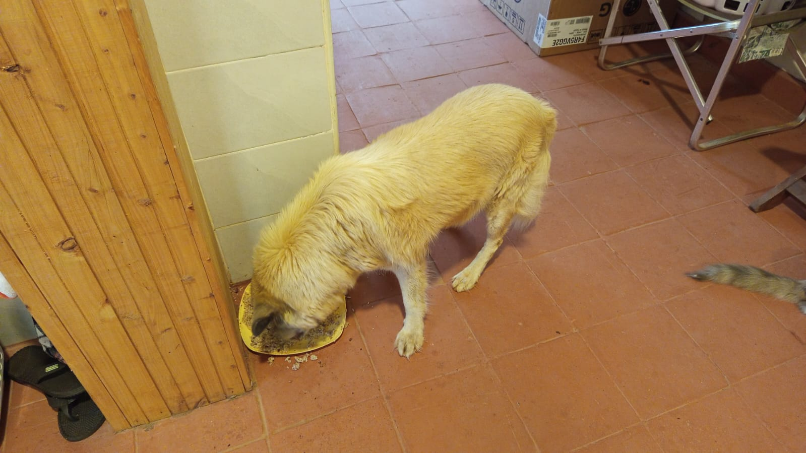

Mucheru World of Golf
Field engineering operations across Mucheru World of Golf on Friday, 23rd October 2026 delivered extensive progress across aggregate supply, teebox surfacing, sprinkler distribution, gravity drainage testing, and reservoir water management:
Civil Earthworks & Hydraulic Engineering Milestone
Under the joint supervision of Mr. Gichuhi and Ken, two lorries of clean river sand were delivered and stockpiled on site. Earthmoving teams hauled and spread red soil across Teeboxes 1, 10, and 18. Plumber technicians installed additional saddle clamps on HDPE pop-up sprinkler lateral lines across Greens 3, 4, 8, and 14, followed by trench backfilling. Laborers connected orange PVC drainage pipes, tested gravity water flow using buckets, and backfilled the lines. The main gravity drainage collector trench was graded and leveled. Dam 2 liner repairs were fully completed, allowing Dam 1 water to be pumped directly into Dam 2 so Dam 1 liner repairs can proceed, while Dam 3 inlet intake continued and Green 5 was watered.
- Riversand Bulk Material Intake (2 Lorries): Two commercial tipper lorries delivered consignments of clean, washed river sand to the golf course, discharging stockpiles on site for putting green agronomic rootzone blending.
- Teebox Red Soil Application (Tees 1, 10 & 18): Labor crews applied and leveled red topsoil across the playing surface of Teebox 1, completed full coverage on Teebox 10, and initiated red soil spreading across Teebox 18.
- HDPE Pop-Up Sprinkler Saddle Clamps Installation: The plumbing technician installed bolted saddle clamp fittings onto HDPE sprinkler supply pipes across Greens 3, 4, 8, and 14, establishing vertical riser takeoff points for pop-up sprinkler heads.
- Sprinkler Lateral & PVC Drainage Pipe Trench Backfilling: Ground crews backfilled the lateral HDPE sprinkler trenches with soil across Greens 3, 4, 8, and 14; concurrently, laborers joined orange PVC drainage pipes and backfilled the trenches.
- PVC Pipe Gravity Flow Testing with Bucket Water: Workers poured water directly from buckets into the upper ends of installed PVC drainage pipes, confirming positive fall and unobstructed gravity discharge toward fairway collector channels.
- Main Collector Drainage Trench Leveling & Bed Shaping: Manual excavation crews operated inside the long main collector drainage trench with shovels, clearing high spots and leveling the trench bed to ensure smooth gravity water flow from all greens.
- Dam 2 Repair Complete & Dam 1 Water Transfer to Dam 2: Liner repairs on Dam 2 were fully completed; a fuel-powered pump was deployed inside Dam 1 to transfer water into Dam 2 to allow Dam 1 polythene liner repairs, while Dam 3 intake continued and Green 5 was watered.
18-hole putting green status audit showing the latest work completed and current condition for each green as of October 23, 2026:
| Green | Current Technical & Agronomic State | Milestone Status |
|---|---|---|
| Green 1 | HDPE irrigation pipes laid and fitted inside perimeter sprinkler trenches (Oct 18). | Sprinkler Pipes Laid |
| Green 2 | HDPE irrigation pipes laid and fitted inside perimeter sprinkler trenches (Oct 18). | Sprinkler Pipes Laid |
| Green 3 Today | Saddle clamps installed on HDPE pop-up sprinkler pipes and perimeter trenches backfilled (Oct 23). | Saddle Clamps & Covered |
| Green 4 Today | Saddle clamps installed on HDPE pop-up sprinkler pipes and perimeter trenches backfilled (Oct 23). | Saddle Clamps & Covered |
| Green 5 Today | Ready. Fully established mature championship putting green turfgrass watered with pop-up sprinklers (Oct 23). | Ready • Established Turf |
| Green 6 | Saddle clamps installed on HDPE pop-up sprinkler pipes and perimeter trenches backfilled (Oct 22). | Saddle Clamps & Covered |
| Green 7 | Drainage outlet trench connecting green 7 to main canal dug and leveled by manual crew (Oct 15). | Outlet Trench Dug • Leveled |
| Green 8 Today | Saddle clamps installed on HDPE pop-up sprinkler pipes and perimeter trenches backfilled (Oct 23). | Saddle Clamps & Covered |
| Green 9 | Orange drainage PVC pipe connected and outlet trench leveled leading to main canal (Oct 15). | PVC Connected • Trench Done |
| Green 10 | Pop-up sprinkler trenches digging completed around collar and surrounds (Oct 15). | Sprinkler Trenches Complete |
| Green 11 | Saddle clamps installed on HDPE pop-up sprinkler pipes and perimeter trenches backfilled (Oct 22). | Saddle Clamps & Covered |
| Green 12 | Saddle clamps installed on HDPE pop-up sprinkler pipes and perimeter trenches backfilled (Oct 22). | Saddle Clamps & Covered |
| Green 13 | Saddle clamps installed on HDPE pop-up sprinkler pipes and perimeter trenches backfilled (Oct 22). | Saddle Clamps & Covered |
| Green 14 Today | Saddle clamps installed on HDPE pop-up sprinkler pipes and perimeter trenches backfilled (Oct 23). | Saddle Clamps & Covered |
| Green 15 | Saddle clamps installed on HDPE pop-up sprinkler pipes and perimeter trenches backfilled (Oct 22). | Saddle Clamps & Covered |
| Green 16 | Saddle clamps installed on HDPE pop-up sprinkler pipes and perimeter trenches backfilled (Oct 22). | Saddle Clamps & Covered |
| Green 17 | Installation of 1 solenoid valve commenced; saddle clamps installed on HDPE sprinkler pipes and covered (Oct 22). | Solenoid & Clamps Set |
| Green 18 | Pop-up sprinkler trenches dug; riversand applied and leveled across green surface (Oct 14). | Riversand • Sprinkler Trench |
18-hole championship teebox status audit tracking launch platform shaping, red soil leveling, and irrigation pipe installations as of October 23, 2026:
| Teebox | Current Technical & Earthwork State | Platform Status |
|---|---|---|
| Tee 1 Today | Red soil applied, spread, and leveled across launch platform to finished grade (Oct 23). | Red Soil Leveled |
| Tee 2 | Platform surface grading and earthwork leveling further refined per updated instructions (Oct 20). | Refined & Graded |
| Tee 3 | Playing launch platform contoured, leveled, and refined per new instructions given today (Oct 20). | Refined & Graded |
| Tee 4 | Championship launch platform surface graded, contoured, and refined per new instructions (Oct 20). | Refined & Graded |
| Tee 5 | Playing platform surface actively graded and refined with red soil per new instructions (Oct 20). | Grading & Refining |
| Tee 6 | Trench excavated through platform to lay HDPE irrigation pipe connecting to Green 7 system (Oct 21). | Irrigation Trench Dug |
| Tee 7 | Both platforms actively graded, contoured, and refined with red soil per new instructions (Oct 20). | Refined & Graded |
| Tee 8 | Championship launch platform surface grading and contour refinement actively continued (Oct 19). | Grading & Refining |
| Tee 9 | Playing launch platform grading and contour refinement continued per new instructions (Oct 20). | Refinement in Progress |
| Tee 10 Today | Red soil applied, spread, and leveled across launch platform surface (Oct 23). | Red Soil Leveled |
| Tee 11 | Red soil applied, spread, and leveled across playing launch platform to finished grade (Oct 22). | Red Soil Leveled |
| Tee 12 | Red soil applied across both men's and women's tee platforms; final leveling in progress (Oct 22). | Red Soil Applied |
| Tee 13 | Initial layer of red soil hauled, applied, and spread across platform surface (Oct 21). | Red Soil Applied |
| Tee 14 | Launch platform earthworks completely finished, shaped, and refined to final playing contour (Oct 7). | Finished & Refined |
| Tee 15 | Red soil hauled, spread, and leveled across platform to finished design elevation (Oct 21). | Red Soil Leveled |
| Tee 16 | Surplus red soil moved onto platform; launch terrace completely reshaped and leveled (Oct 5). | Platform Reshaped |
| Tee 17 | Red soil applied, spread, and leveled across platform terrace adjacent to Green 17 (Oct 21). | Red Soil Leveled |
| Tee 18 Today | Initial stages of applying and spreading red soil across launch platform underway (Oct 23). | Red Soil Applied |
Operations Agronomy & Engineering Synthesis
Course Agronomy & Earthwork Milestones: 2 lorries of washed river sand delivered for rootzone profile; red topsoil applied and leveled across Teeboxes 1 and 10, with initial spreading underway on Teebox 18; Green 5 mature turf watered alongside boundary hedge seedlings.
Hydraulic & Irrigation Infrastructure: Saddle clamps installed on HDPE pop-up sprinkler lateral lines and trenches backfilled across 4 greens (Greens 3, 4, 8, 14); orange PVC drainage pipes connected, tested for gravity fall with bucket water, and backfilled; main collector drainage trench shaped and leveled for positive gravity flow; Dam 2 liner repairs fully completed; water actively pumped from Dam 1 into Dam 2 for upcoming liner repairs; Dam 3 inlet inflow progressing steadily.
Field video recordings documenting Friday, 23rd October 2026 operations at Mucheru World of Golf, showcasing course-wide earthworks, drainage infrastructure, and water transfer between storage reservoirs:
Comprehensive field video capturing Friday, 23rd October 2026 progress: delivery of river sand, red soil leveling across Teeboxes 1, 10, and 18, saddle clamp installation and backfilling on Greens 3, 4, 8, and 14, PVC pipe gravity testing, main drainage channel grading, and Green 5 pop-up irrigation.
Field recording capturing Dam 2 receiving water pumped directly out of Dam 1 following complete repair of the Dam 2 polythene liner, facilitating emptying of Dam 1 for necessary liner seam maintenance.
Sequential photographic field documentation showing river sand delivery, teebox red soil earthworks, sprinkler lateral fittings, PVC pipe backfilling, gravity drainage leveling, and reservoir water transfer:

Riversand Delivery Offloading
Commercial tipper lorry discharging clean, washed river sand onto the course staging area for putting green rootzone layer blending.

Aerial Drone View — Teeboxes 10 & 1
Overhead drone perspective displaying Teebox 10 and Teebox 1 platforms surfaced and leveled with fresh red topsoil across the fairway corridor.

Manual Spreading — Teebox 1 Platform
Ground labor crew utilizing wheelbarrows and shovels to distribute and level red topsoil across the Teebox 1 playing launch terrace.

Finished Grade — Teebox 10 Red Soil
Elevated ground perspective showing the launch platform of Teebox 10 fully layered, spread, and leveled with rich red topsoil.

Initial Red Soil Spreading — Teebox 18
Aerial capture showing laborers moving wheelbarrows of red soil onto the Teebox 18 platform, with the adjoining Dam 2 basin in view.

Sprinkler Trench Backfill & Access Sleeve
Perimeter lateral trench backfilled with soil showing the orange riser sleeve, with the women's crew visible in the distance backfilling drainage lines.

HDPE Pipe Trench Bedding & Leveling
Workers positioning and leveling the black HDPE sprinkler lateral pipe inside the excavated collar trench along the sand-covered green foundation.

Drainage PVC Fitting & Cutting
Site plumbing technician using a handsaw to cut and join orange PVC drainage pipes with a tee-fitting inside the green outlet trench.

Connected PVC Drainage Network
Jointed orange PVC drainage pipes aligned inside the trench bed ready for positive gravity fall verification and final soil covering.

Direct Gravity Water Flow Testing
Laborer pouring water from a bucket into the PVC pipe inlet to verify uninterrupted gravity flow along the trench corridor toward the main outlet.

Aerial Drone View — Drainage Backfilling
Overhead drone view of the women's manual labor crew backfilling excavated soil over the installed PVC drainage line along the fence road.

Main Collector Trench Bed Grading
Workers with shovels shaping and trimming the wet bed of the main collector drainage trench to ensure continuous gravity discharge from greens.

Manual Drainage Trench Excavation & Leveling
Ground labor crew using jembes and shovels to excavate, trim, and level the drainage channel alignment across open terrain.

Aerial Drone View — Main Collector Trench
High-angle drone capture showing the extended curved alignment of the main drainage trench winding across fairway earthworks with laborers grading the bed.

Overhead Drone Capture — Trench Leveling
Drone photograph showing workers inside the trench bed alongside orange PVC and irrigation pipes, trimming gradients for gravity water flow.

Dam 2 Inflow Following Repair Completion
Fully repaired black polythene liner of Dam 2 securely anchored along the basin berm, receiving pumped water transferred from Dam 1.

Aerial Drone View — Dam 1 Pump Operation
Drone capture into Dam 1 basin showing the fuel-powered water pump operating at the base, transferring water via hose across to Dam 2.

Dam 1 Water Pump Monitoring
Attendant positioned along the polythene-lined slope of Dam 1 monitoring the fuel pump as it evacuates water toward Dam 2 for liner repairs.

Dam 3 Reservoir Storage Inflow
Dam 3 holding substantial water reserves with anchored liner and reinforced perimeter earth berms, continuing to receive inlet water inflow.

Green 5 Turfgrass Pop-Up Sprinkler Irrigation
Automated pop-up sprinklers spraying arcs of water across the mature turfgrass of Green 5, maintaining optimal agronomic hydration.
Chaka Farms
Operations across Chaka Farms on Friday, 23rd October 2026 maintained balanced production, animal wellness, and grounds maintenance across four coordinated supervisory sectors:
Farm Operational Highlights
Dairy production achieved 8.0 Litres gross harvest (5.0L morning + 3.0L evening), with 7.0 Litres dispatched for commercial sales (4.0L morning + 3.0L evening) and 1.0 Litre distributed for routine internal farm allocations (0.5L Gladys staff ration + 0.5L Maasai), achieving 100% quantitative accounting reconciliation strictly in Litres with zero discrepancy. Ken supervised the thorough cleaning of Gate A, hose watering of newly planted perimeter hedge seedlings, and resumption of tiered rock garden earthworks using red soil. Willy oversaw daily canine unit care, including kennel sanitation, paw command training, walking, kennel manners, and pack socialization with Bella, Coby, and Logan. Margaret and Monica maintained compound cleanliness and tended fruit seedlings.
- 100% Reconciled Dairy Harvest in Litres: Daily dairy harvest yielded 8.0 Litres gross production, completely reconciled between 7.0 Litres commercial sales (4.0L morning + 3.0L evening) and 1.0 Litre internal disbursements (0.5L Gladys + 0.5L Maasai).
- Zero-Discrepancy Production Ground Truth: All milk metrics are recorded strictly in Litres; morning and evening commercial sales matched field dispatch logs exactly, with internal farm allocations fully accounted for.
- Rock Garden Earthworks Resumption: Ken oversaw the resumption of landscaped rock garden construction, spreading and shaping rich red topsoil within the natural stone terrace borders.
- Gate A Sanitation & Hedge Seedlings Irrigation: Farm workers cleaned Gate A compound and applied direct hose irrigation to the newly planted hedge seedlings along the boundary fence line.
- Canine Unit Pack Socialization & Manners: Willy directed morning socialization sessions introducing Bella, Coby, and Logan, reinforced kennel manners, conducted paw command drills, and supervised daily walking.
- Compound Cleanliness & Seedling Tending: Margaret and Monica carried out grounds sweeping, compound maintenance, and garden care around the recently planted fruit seedlings.
Official milking production and distribution reconciliation for Friday, 23rd October 2026, accounting for all commercial sales and on-farm allocations:
| Category / Transaction | Morning Session | Evening Session | Daily Total |
|---|---|---|---|
| Gross Milk Harvested | 5.0 Litres | 3.0 Litres | 8.0 Litres |
| Commercial Milk Sales (Dispatched) | 4.0 Litres | 3.0 Litres | 7.0 Litres |
| Internal Farm Allocation — Gladys (Staff) | 0.5 Litres | — | 0.5 Litres |
| Internal Farm Allocation — Maasai | 0.5 Litres | — | 0.5 Litres |
| Internal Farm Allocation — Goat Kids (Weaned) | 0.0 Litres | 0.0 Litres | 0.0 Litres |
| Total Volume Accounted For | 5.0 Litres | 3.0 Litres | 8.0 Litres (100% Reconciled) |
Dairy Accounting & Farm Reconciliation Note
Total gross milk harvested of 8.0 Litres is 100% accounted for by 7.0 Litres dispatched for commercial sales (4.0L morning + 3.0L evening) and 1.0 Litre in routine farm allocations (0.5L Gladys + 0.5L Maasai). In accordance with reporting rules, milk volumes are recorded strictly in Litres (never kilograms), and Maasai is designated strictly as Maasai with zero discrepancy. All yields reconcile perfectly with zero variance.
Daily behavioral conditioning routines, pack socialization, grounds landscaping, and compound maintenance conducted on Friday, 23rd October 2026:
- Pack Socialization with Bella, Coby & Logan: Willy conducted structured morning pack socialization sessions with Bella, Coby, and Logan, promoting calm demeanor, cooperative play, and non-reactive coexistence.
- Kennel Manners & Behavioral Conditioning: Handlers reinforced door boundary discipline, patient crate entry and exit manners, and impulse control drills during morning and afternoon kennel routines.
- Kennel Sanitation, Paw Commands & Walking: Daily washing and disinfection of kennel stalls were completed, accompanied by paw ("pow") command training and leashed exercise walks.
- Rock Garden Red Soil Works Resumption: Ken directed the ongoing construction of the tiered rock garden feature, shaping mounded red topsoil within stone retaining borders and preparing planting terraces.
- Gate A Compound Cleaning & Hedge Irrigation: Farm attendant Mwangi cleaned Gate A compound grounds and applied hose irrigation to newly planted hedge seedlings along the fence line.
- Compound Maintenance & Seedling Care: Margaret and Monica performed comprehensive compound sweeping, grounds upkeep, and soil cultivation around recently planted fruit seedlings.
Field recording capturing morning pack socialization routines with Bella, Coby, and Logan, practicing off-leash calm interactions and handler responsiveness on the farm lawn.
Field recording showing structured kennel manners conditioning under Willy, verifying dogs demonstrating patience, calm stall manners, and obedience to release commands.
Photographic field evidence documenting Gate A hedge seedling watering, compound entrance cleaning, and rock garden construction:

Gate A Entrance Maintenance & Irrigation
Farm worker Mwangi watering newly planted hedge seedlings along the wire boundary fence beside the newly fitted black metal gate at Gate A.

Boundary Hedge Seedlings Hose Watering
Detailed perspective of attendant Mwangi applying direct hose spray to establish the hedge seedling root systems along the compound fence.

Tiered Rock Garden Construction
Resumed landscaping work on the tiered rock garden feature, shaping mounded red topsoil retained by natural stone borders and planting terraces.
Kabete Residence
Operations at Kabete Residence on Friday, 23rd October 2026 centered on civil substructure preparation, steel rebar grid fabrication, material intake, and domestic pet welfare, overseen and shared by Njoki:
Substructure Reinforcement & Civil Milestone
Civil construction crews advanced the SQ fireplace structure, dismounting the existing wall security grill using an angle grinder, laying heavy black polythene damp-proof sheeting across the timber shutter formwork bed, and offloading delivered steel rebar rods from a pickup. Steel fixers fabricated and placed the concrete reinforcement rebar grid directly over the polythene-lined base slab, bending rebar rods at the slab perimeter to tie securely into the cold room shutter slab. Domestic pet routines were maintained, with Ajabu the Golden Retriever walked on leash and fed indoors, and resident cats Reo, Mocha, and Aiko fed together.
- SQ Fireplace Security Wall Grill Dismounting: Metalworkers used an angle grinder to cut through welds and anchor fixings, dismounting the black steel wall security grill at the SQ fireplace to prepare for structural concrete slab casting.
- Delivered Steel Rebar Offloading from Pickup: A consignment of bent steel reinforcement bars delivered by pickup truck was offloaded by workers and staged along the work area for immediate slab grid assembly.
- Black Polythene Damp-Proof Membrane Installation: Laborers spread and fitted heavy-gauge black polythene sheeting across the entire marine board shutter formwork base, creating an impermeable moisture barrier beneath the concrete.
- Shutter Base Slab Steel Rebar Grid Placement: Steel fixers laid out, aligned, and tied the high-tensile steel reinforcement rebar grid over the polythene-covered formwork bed according to structural engineering specifications.
- Cold Room Slab Rebar Edge Bending & Integration: Workers bent rebar ends along the slab perimeter using bending keys, projecting them outward to form a continuous structural connection with the adjoining cold room shutter slab.
- Domestic Pet Wellness & Nutrition Routine: Ajabu the Golden Retriever completed his daily leashed neighborhood walk and indoor feeding routine, while resident cats Reo, Mocha, and Aiko fed peacefully together from stainless steel bowls.
Sequential photographic field documentation showing wall grill cutting and removal, material offloading, black polythene membrane laying, rebar grid fabrication, and domestic pet care:

Angle Grinder Cutting — Wall Grill Dismounting
Metal technician using an electric angle grinder with sparks flying to cut and detach the steel wall security grill from the concrete edge at the SQ fireplace.

Grill Section Removal — SQ Fireplace
Construction team cutting away the remaining anchor points of the metal grill barrier above the timber shutter formwork and rebar cages.

Detached Security Grill Removal
Laborers lifting and setting aside the dismounted steel wall grill from the fireplace foundation opening to clear the work zone for rebar and slab casting.

Steel Rebar Delivery Offloading
Worker offloading bundles of bent U-shaped steel reinforcement metal bars from the rear of the delivery pickup truck for immediate placement.

Damp-Proof Polythene Membrane Installation
Heavy-duty black polythene paper laid across the marine board shutter formwork base, providing a moisture barrier beneath rebar cages and concrete.

Base Slab Formwork Polythene Lining
Complete perspective of the base slab formwork bed lined with black polythene sheeting, ready for steel reinforcement placement and concrete pouring.

Rebar Fabrication Over Shutter Formwork
Steel fixers in high-vis safety vests bending, spacing, and tying reinforcement rebar rods across the plywood formwork bed at the SQ fireplace.

Reinforcement Grid Placement Over Polythene
Steel reinforcement rebar grid and beam cages positioned directly over the black polythene lined shutter formwork base slab.

Edge Rebar Bending — Cold Room Slab Joint
Construction crew bending reinforcement bars at the slab edges to form an integrated structural connection with the adjoining cold room shutter slab.

Ajabu Daily Leashed Exercise Walk
Ajabu the Golden Retriever enjoying his daily outdoor leashed exercise stroll along the paved pathway borders at Kabete Residence.

Outdoor Exercise Routine — Ajabu
Ajabu exploring the compound grounds on leash with handler, maintaining routine physical activity and behavioral wellness.

Indoor Meal Routine — Ajabu
Ajabu the Golden Retriever eating his prepared meal indoors from his feeding dish in the residential living quarters.

Resident Cats Mealtime — Reo, Mocha & Aiko
Resident cats Reo, Mocha, and Aiko feeding peacefully side-by-side from individual stainless steel bowls in the dining corridor.